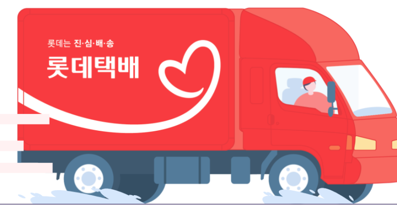
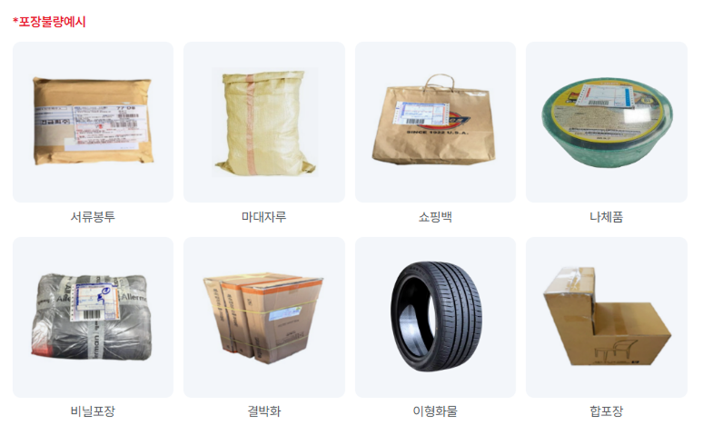
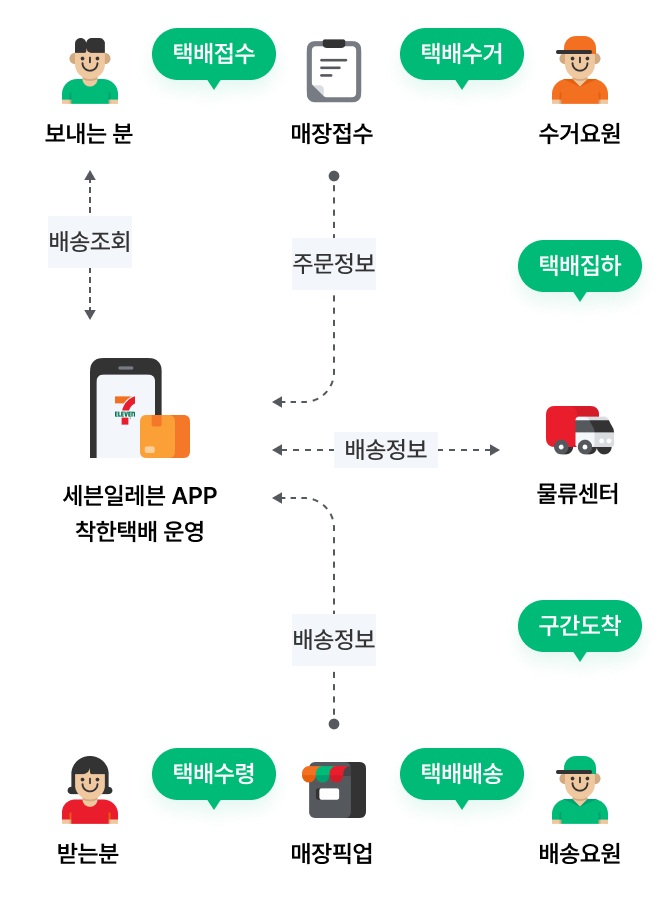

매장안내
매장안내
home > 매장찾기 > 서비스 안내
서비스 안내
세븐일레븐의 서비스를 안내해드려요
택배 서비스 안내
세븐일레븐에서는 365일 24시간 택배 접수가 가능하며,
점포와 점포 간 배송 서비스인 착한택배 를 이용하실 경우
더욱 저렴한 가격으로 서비스 이용이 가능합니다.
-
롯데는 진심 배송💕
- 롯데택배와 함께하는 택배 서비스
- 전국 세븐일레븐 점포에서 만나세요! (일부 점포 제외)
- 익일 배송 마감 시간
- 수도권, 광역시 : 당일 17시 이전 접수
- 그 외 지역 : 당일 15시 이전 접수분
- 일부 지역(수도권 포함)은 지역 특성에 따라 달라질 수 있습니다.
- 주말 접수분은 익일 배송이 불가할 수 있습니다.
- 
세븐일레븐의 착한택배
세븐일레븐의 또하나의 자랑을 소개합니다
- 착한택배란?
- 세븐일레븐에서 보내고, 세븐일레븐에서 받는 택배서비스입니다.
| 운임 | 1,890원 (내륙 ↔ 내륙, 제주 ↔ 제주) |
|---|---|
| 무게 | 5kg 이하 |
| 크기 | 가로, 세로, 높이의 합 80cm 이하 |
| 물품가액 | 50만원 이하 |
| 접수 및 배송일 | 365일 |
| 배송기간 | 15시 이전까지 당일 접수, 접수일로부터 2~5일 ※배송상황에 따라 일부 지연될 수 있습니다. |
- 착한택배 이용방법
- 간편하고 쉬운 착한택배 이용 방법을 안내해드립니다.
- 접수가능 품목
- 안전한 배송을 위해 접수 가능한 품목을 확인해주세요.
| 접수가능품목 | 의류 | 무게 5kg 이하가로, 세로, 높이 합 80cm 이하 접수 가능 |
|---|---|---|
| 잡화/서적 | ||
| 전자제품 | ||
| 가구 | ||
| 곡물사료 | ||
| 취급 제한 품목 | 현금화 가능 물품 | 현금화 사용 가능 물품 (현금, 어음, 상품권, 수표 유가증권, 공연티켓 등 ) |
| 서신류 | 우편법상의 제한물품 (편지, 신분증, 여권, 긴급을 요하는 서류 화물 등) | |
| 재생불가 및 시한성 물품 | 원본재생불가 및 시한 초과시 가치 상실물품 (서류, 필름, 입학원서, 입사서류 등) | |
| 고가제품 | 50만원 초과 상품 (예술품, 골프채, 낚시대 등) | |
| 동식물 | 동·식물 및 동식물 사체 | |
| 변질, 파손 유의 상품 | 운송기간 중 변질 및 파손이 우려되는 물품 (식품류, 한약류, 과일류, 화훼류, 유리류 등) | |
| 위험물품 | 독극물, 농약류, 마약류, 화약류, 총포(도검류), 인화성 물질, 페인트류, 배터리 등 |
- 올바른 포장방법
- 안전한 배송을 위한 포장 가이드입니다.
- 튼튼한 박스나 포장재 사용
- 물품이 박스 안에서 움직이지 않도록 완충재 충분히 사용
- 박스 테이핑은 십자형으로 견고하게
- 송장은 박스 상단 평평한 곳에 부착
- 기존 송장이나 바코드는 완전히 제거
- 무게와 크기 제한 준수 (5kg 이하, 80cm 이하)

- 배송 프로세스
- 착한택배의 배송 과정을 단계별로 안내합니다.

자주 묻는 질문
착한택배 이용 시 자주 묻는 질문들입니다.
Q. 배송료는 얼마인가요?
A. 착한택배 배송료는 전국 동일하게 1,890원입니다.
Q. 배송기간은 얼마나 걸리나요?
A. 15시 이전 접수 시 접수일로부터 2~5일 소요됩니다.
Q. 배송조회는 어떻게 하나요?
A. 접수 시 받은 송장번호로 세븐일레븐 홈페이지 및 앱에서 조회 가능합니다.
Q. 배송 중 분실되면 어떻게 하나요?
A. 물품가액 50만원 한도 내에서 배상처리됩니다.
Q. 착한택배 서비스는 뭔가요?
A. 코리아세븐의 전국 저온 배송 물류망을 통해 동일 운임으로 접수 / 집하 / 배송하는 Store to Store 택배서비스
서비스입니다.
Q. 착한택배 운임은 어떻게 되나요?
A. 착한택배는 균일가 운임은 1,980원 입니다. 전국 동일한 운임료가 적용됩니다.
현재는 코리아세븐 내륙점포↔내륙점포, 제주도점포↔제주도점포 간에 서비스가 제공됩니다. (내륙↔제주간은 추후 런칭 예정)
현재는 코리아세븐 내륙점포↔내륙점포, 제주도점포↔제주도점포 간에 서비스가 제공됩니다. (내륙↔제주간은 추후 런칭 예정)
Q. 물품포장은 고객이 직접 해야 하나요?
A. 고객님께서 보내실 물건의 포장을 직접해 가지고 오셔야 합니다.
배송 중 포장 부실에 따른 상품의 고장/파손에 대하여 택배사의
배상 책임을 묻지 않겠다는 고객님의 동의 절차를 거치게 됩니다. (※파손 면책 약관 세부사항 참고)
배송 중 포장 부실에 따른 상품의 고장/파손에 대하여 택배사의
배상 책임을 묻지 않겠다는 고객님의 동의 절차를 거치게 됩니다. (※파손 면책 약관 세부사항 참고)